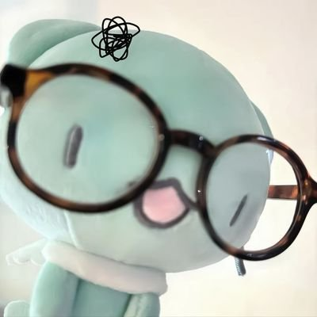
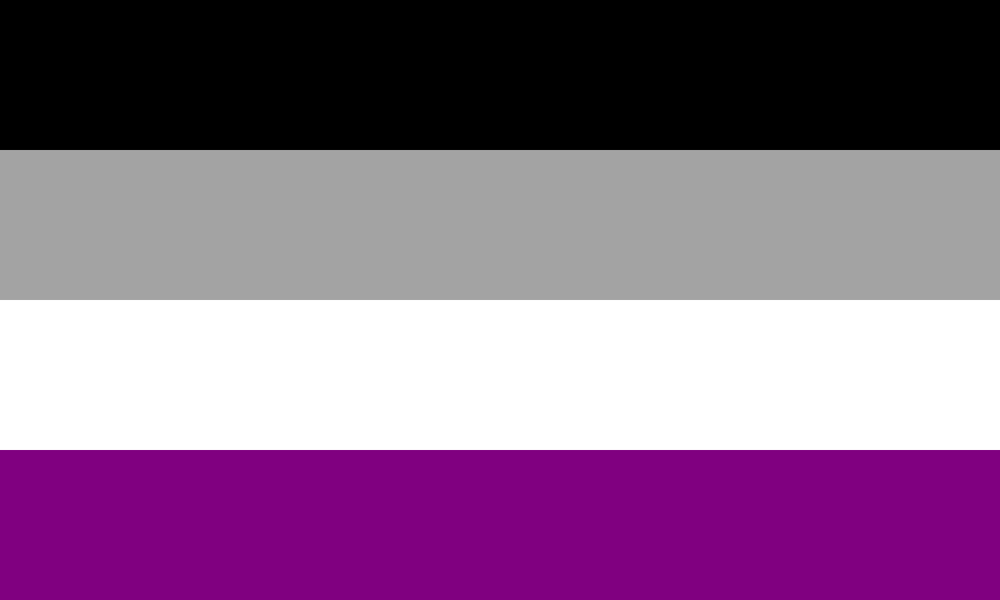
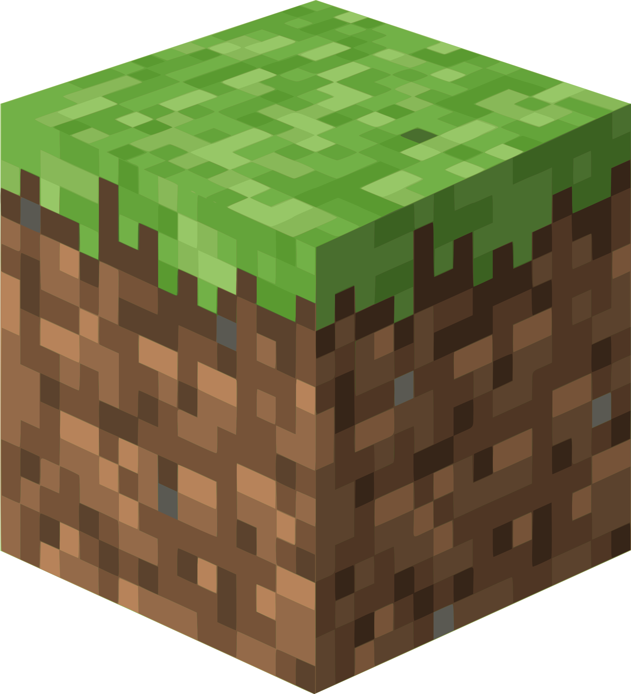
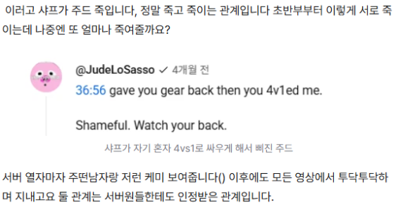

요즘 마이붐은 마인크래프트인듯...
⚠️ 트윗/미디어 정리 잦은 편입니다!
요즘 덕질: Unstable Universe / Minecraft Horror / 20세기 과학사
안 사귀는 사이, Non-CP >>> BL, HL > GL 안 사귀는 사이(로맨스 기류◦)/논씨피(로맨스 기류x)
ㅤ- 기본적으로 최애른 고정입니다.
ㅤ- 덕질에 전공(서양사, 과학사 등) 요소를 넣어 해석하는 경우가 많습니다.
ㅤ- 최애 POV 위주로 보나, 시청 이후 추가적으로 유동적으로 보는 편입니다.

StateSMP
ㅤㅤ- 2.0 / 2.5 / 체인드 라이프 시청 완료!
ㅤㅤ- 샙왼 캐해 안 맞습니다.
- 최애: 슈프드, 사파라타, 터키
- CP: 플샙(고정), 엘란키
- 조합: Schparata
ㅤㅤ- 랭셈피 제가 만든 말입니다. 랭셈피 너무 좋아합니다.

- 최애: 샤프, 머검, 타이, 시오, 제이든, 팔콘
- CP: Sharplow(수상한 사이/보통 안 사귀는 사이로 캐해합니다), Daisygrove(보통 리조이스의 사랑이 더 크다고 캐해), 팔콘늅
- 조합: Homelessduo, Shieldlessduo
ㅤㅤ- 위피 영상 위주로 봅니다.
- 최애: AndrewGaming67, sfawtde등장인물
ㅤㅤ- 슈프드 POV 위주로 시청했습니다. (+ 추가로 시니카, 스파이디 시청)
- 최애: 슈프드, 스파이디, 포시빗, 우기, 시니카, 토마스
- 조합: Sunsettrio
ㅤㅤ- 패럿 시점 위주로 시청합니다. NG 영상 너무 좋아합니다(적극적 소비)
- 최애: 패럿, 테오, 메인, 미닛, 슈빌리, 레오
- CP: Odysseyduo(수상한 사이), 클라운지(긴장감 가득한 관계로 캐해)
- 조합: Taxduo, Mafiatrio, Monarchduo, Deviousduo, Cartwings, 슈빌테오슈빌
ㅤㅤ- 포씨 POV 위주로 시청했습니다. (+ 추가로 캠밴, 노미널, 아포 시청)
- 최애: 소시지, 체리, 아포, 포시빗
- CP: 아포체리(고정), 노미포씨(고정/수상한 사이)
- 조합: 스콧캠밴(스콧이 일방적이라는 캐해)
ㅤㅤ- 네덜란드 파벌 멤버들 좋아합니다!
ㅤㅤ- 샤포+베헤타 조합으로는 먹지만 씨피는 못 봅니다.
- 최애: 로예르, 샤포, 던컨
- CP: 던컨샤포, Darklightduo(센슾이샨)
- 조합: Spiderduck
ㅤㅤ- 오디페넬 공컾깨 연성 지뢰입니다.
ㅤㅤ- SharpWolf 안 봅니다. 퍼시잭슨 스토리에 영향 받아 호메로스 「오디세이아」와 상반된 설정을 가졌거나, 한 행동과 다르게 호평을 받는 캐릭터 소비 안 합니다.
- 최애: Poseidon, Athena, Telemachus, Hermes, Penelope, Odysseus
- CP: 오디페넬
- 조합: 오디세우스 & 헤르메스 / 폴리테스
ㅤㅤ- 매들린 밀러 저서 캐해 안 맞습니다. 고서 위주로 봅니다.
- 최애: 헤르메스, 디오니소스, 헬리오스, 페넬로페
- 최애 서사: 다프네, 황금사과
- 조합: 아르테미스+아폴론
ㅤㅤ- 시긴로키 공컾깨 연성 지뢰입니다. 2차 창작물은 소비 잘 안 합니다.
ㅤㅤ- 입덕은 닐 게이먼 도서로 시작했습니다. 이외에 고서 자료 등 다양하게 보고 있습니다.
- 최애: 시긴, 로키, 토르, 오딘, 미미르, 발드르, 헤임달
ㅤㅤ- 로렌스른 고정입니다. 로렌스왼 캐해는 뮤트/블락으로 대처하고 있습니다.
ㅤㅤ- 대부분 관계를 논씨피(수상한 관계)로 캐해합니다.
- 최애: 로렌스, 베니테스, 테데스코
- CP: 베니로렌
- 조합: 테델리니, 테데베니, 사바벨리
ㅤㅤ- 31른/16른 고정입니다. 리버스는 블락으로 대처하고 있습니다.
- 최애: 에스테반 오콘, 샤를 르클레르, 아일톤 세나
- CP: 1031, 3331, 333, 554, 5516, 3316, 3363, 814(수상한 사이), 644, 2363, 527(고정/수상한 사이)
- 조합: 8731, 1287(고정)
ㅤㅤ- 드라마 전편 감상 완료 + 소설 양들의 침묵 완독!
ㅤㅤ- 한니발른 캐해 잘 못 보는 편입니다. 윌 모브물 가끔 먹습니다.
ㅤㅤ- 대부분 관계를 안 사귀는 사이를 전제로 ‘수상한 사이’ 캐해하고 있습니다.
- 최애: 한니발, 베델리아, 윌 그레이엄
- CP: 한니발윌, 매튜윌(매튜의 일방적 사랑)
- 조합:
ㅤㅤ- 31른/16른 고정입니다. 리버스는 블락으로 대처하고 있습니다.
- 최애: 에스테반 오콘, 샤를 르클레르, 아일톤 세나
- CP: 1031, 3331, 333, 554, 5516, 3316, 3363, 814(수상한 사이), 644, 2363, 527(고정/수상한 사이)
- 조합: 8731, 1287(고정)
ㅤㅤ- 바로크 ~ 낭만 위주 / 1차 위주
ㅤㅤ- 피아니스트 따로 덕질은 안 하는 편입니다.
ㅤㅤ- 피아노 소나타 좋아합니다.
- 최애: 라흐마니노프, 샤미나드, 비발디, 바흐, 스크랴빈
- CP: 릿쇼(고정/수상한 사이)
- 조합: 베토슈베, 모차살리
ㅤㅤ- 보일른 고정입니다. 훅보일은 대부분 흐린눈/단어 뮤트로 대처합니다.
ㅤㅤ- 가치관에 문제가 있거나 논란이 있는 과학자에 대해서는 인지하고 있으나, 업적 자체를 부정하진 않습니다. ‘OO는 OOO가 만들었고~’ 정도에서만 언급하고, 미화나 왜곡 등에는 동조하고 있지 않습니다.
- 최애: 로버트 보일, 니콜라 테슬라, 마이클 패러데이, 베르너 하이젠베르크
- CP: 훅보일, 데이데이(수상한 사이)
- 조합: 메시메생, 핼리뉴턴, 헉슬다윈, 맥스데이, 라이다윈, 앙패데이
ㅤㅤ- 31른/16른 고정입니다. 리버스는 블락으로 대처하고 있습니다.
- 최애: 에스테반 오콘, 샤를 르클레르, 아일톤 세나
- CP: 1031, 3331, 333, 554, 5516, 3316, 3363, 814(수상한 사이), 644, 2363, 527(고정/수상한 사이)
- 조합: 8731, 1287(고정)
ㅤㅤ- 드림이나 씨피는 대부분 흐린눈/단어 뮤트 합니다.
ㅤㅤ- 특정 캐릭터의 서사 덕질도 좋아하지만, 누가 더 강하냐를 생각하는 것도 좋아해서 씨피 덕질은 잘 안 하는 편입니다. 원작자가 언급 금지 시킨 캐릭터는 언급 안 합니다.
- 최애: 클락워크, X-virus, 제인 더 킬러
- 조합: 프록시즈
ㅤㅤ- 로어 진행 외에도 스트리머 개인 방송 및 비드콘 영상 많이 봅니다.
- 최애: 클라운, 브랜지, 데랍츄, 애쉬, 레오, 미닛, 베이컨, 테오
- CP: Branzypierce
- 조합: Paradoxduo, Supernovaduo, Prideduo, Munityduo, P.M.C. , Orbitalduo, Destrucionduo, Timekillers, Partykillers, M.O.B.
ㅤㅤ- 공식에서 준 박사즈 연애물 좋아합니다.
ㅤㅤ- 원작자분 인터뷰 영상도 자주 보는 편입니다.
- 최애: 096, 4999, 049, 468, 035, o5 평의회 전원
- CP: 아벅기어(아벅의 일방적 사랑 캐해), clefdraki
ㅤㅤ- 시즌 9까지 시청(가끔 x영상은 봅니다)
- 최애: Etho, Grian, Scar, Mumbo, Cleo
- CP: Majorwood, Ethubs
- 조합: Buttercuptrio, Desertuo, Grumbo, Murdertrio, Bad boys, Boat boys
- 현재는 이런저런 이유로 언급은 잘 안 합니다. 현재 있는 논란 사항에 대해서도 인지하고 있고, 인식도 많이 안 좋아졌다는 것을 알고 있지만 초창기에 덕질했던 것 자체를 욕하는 것은 자제해주셨으면 합니다.
- 논란 있는 cc는 c 소비도 안 하는 편입니다. 현실 관계가 안 좋아진 cc들도 관계 소비 안 합니다. 마음 식은 장르이지만 장르 전성기 경험+제 잼민이 시절 책임진 장르이기에 같이 이야기해주시면 정말 좋아합니다.
- 최애: 퐁크, 풀리쉬, 터보, 필자, 배드
- CP: Karlity, Dapduo(수상한 사이), Samponkfool, Skephalo
- 조합: Emeraldduo, Benchtrio, Pumpkinduo
ㅤㅤ- 좋아했었지만 현재는 팬덤 분위기+뜨감 이슈(피곤해요)로 직접적으로 보는 걸 좋아하진 않습니다.
- 최애 시리즈: 수상한 이웃집, 미수반, 별의 아이, 겨울신화, 아뜰란티스, 작전명 블랙, 미스뜨리, 밤보눈, 스틸하트, 이방인, 블라인드, 이세계 삼남매, 워터플래그